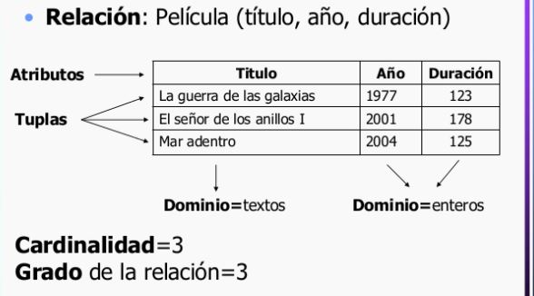
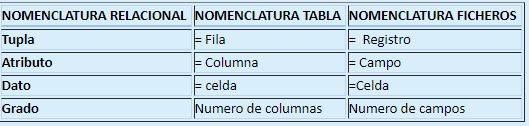

- Fundamentos
- Tipo de Relacion
- Diagrama
Contenido
Fundamentos
Dentro de la base de datos, las tablas se pueden normalizar, es decir, hacer que cumplan las reglas de normalización que hacen a la base de datos flexible, adaptable y escalable. Al estar normalizada, cada porción de los datos es atómica, es decir, está dividida en partes útiles lo más pequeñas posibles.
Modelo entidad relación:
permite representar de manera simplificada los componentes que participan en un proceso de negocio y el modo en el que estos se relacionan entre sí.
Entidades:
El modelo contará con una entidad por cada uno de los componentes del proceso de negocio. Así, en un negocio de venta de suscripciones a revistas, podemos tener entidades “Cliente”, “Dirección”, “Factura”, “Producto”, o “Incidencias”, entre otras.
Relaciones:
Con las relaciones se establecen vínculos entre parejas de entidades. Cada “Cliente” tendrá una “Dirección” de envío en la que recibirá la suscripción, podrá estar suscrito a uno o varios “Productos”, y recibirá una “Factura” con la periodicidad acordada.
Interrelación:
Las interrelaciones las constituyen los vínculos entre entidades, de forma tal que representan las relaciones definidas en el esquema relacional de forma efectiva. Esto no sólo la relación de los registros sino de sus tablas y de las características de la interrelación entre las entidades, a través de un campo clave que actúa como código de identificación y referencia para relacionar
Entidades fuertes:
Lo constituyen las tablas principales de la base de datos que contienen los registros principales del sistema de información y que requieren de entidades o tablas auxiliares para completar su descripción o información. Por ejemplo la tabla usuario es una entidad fuerte en relación a la tabla tipos de usuarios, que es una entidad débil dada su condición auxiliar para clasificar a los usuarios registrados en la biblioteca.
Entidades débiles:
Son entidades débiles a las tablas auxiliares de una tabla principal a la que completan o complementan con la información de sus registros relacionados. Por ejemplo también son consideradas entidades débiles las tablas intermedias que sirven para compartir información de varias tablas principales.


Tipos de relaciones:
1. Relación 1 a 1:
La relación uno a uno, define que un único registro de la tabla puede estar relacionado con un único registro de la tabla relacionada.